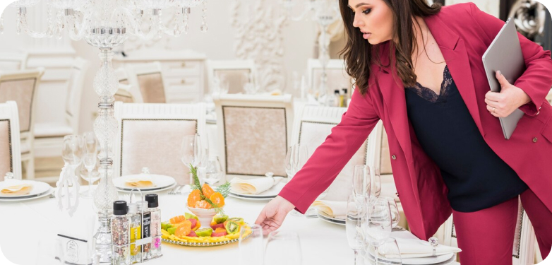
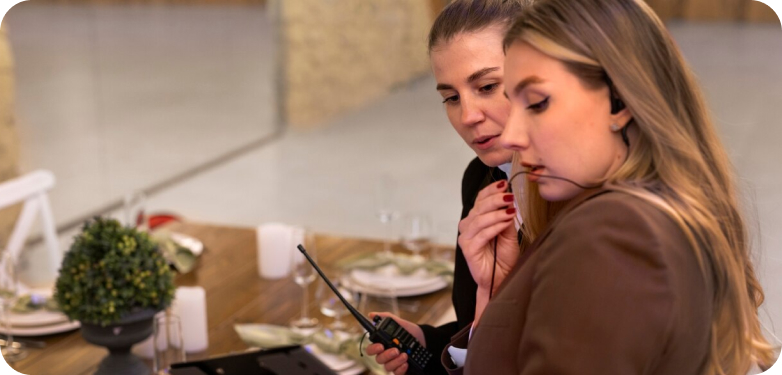

Our Blog
Unveiling the transformative impact of personalized catering, this article delves into the intricacies of tailoring menus to suit the unique preferences and themes of various events. From intimate gatherings to grand celebrations, discover the art of creating culinary experiences that resonate with the distinct tastes and visions of clients.
1. Client Consultation Process: Explore the importance of an in-depth client consultation process, emphasizing the need to understand the client's vision, dietary preferences, and event theme to create a truly personalized menu.
2. Adapting to Event Themes: Discuss the versatility of catering services in adapting to different event themes, whether it's a rustic outdoor wedding, a corporate gala, or a themed birthday party, showcasing the ability to align the menu with the overall ambiance.
3. Flexible Menu Options: Highlight the significance of offering a range of flexible menu options, allowing clients to mix and match dishes, customize portions, and incorporate unique culinary elements to make their event truly one-of-a-kind.
4. Infusing Personal Touches: Showcase how personalized catering goes beyond menu items, incorporating personal touches such as signature cocktails, custom-named dishes, or family recipes, adding a layer of sentimental value to the overall dining experience.
5. Dietary Accommodations: Discuss the seamless integration of dietary accommodations within personalized menus, addressing specific needs such as vegetarian, vegan, gluten-free, or allergen-free options to ensure inclusivity.
6. Collaboration with Culinary Experts: Explore the collaborative relationship between clients and culinary experts, illustrating how chefs work closely with clients to bring their culinary visions to life, offering expert guidance on flavor combinations and presentation.
7. Seasonal and Local Ingredients: Emphasize the use of seasonal and locally sourced ingredients in personalized menus, showcasing the commitment to freshness and sustainability while aligning the flavors with the time of the year.
8. Curating Culinary Experiences: Examine the role of catering in curating not just a meal but a culinary experience, where every aspect, from the appetizers to the desserts, contributes to the overall theme and narrative of the event.
9. Interactive Food Stations: Introduce the concept of interactive food stations as part of personalized catering, allowing guests to customize their dishes or witness live culinary demonstrations, adding an engaging and entertaining element to the event.
10. Client Satisfaction and Memories: Conclude by highlighting the ultimate goal of personalized catering – client satisfaction and the creation of lasting memories. Illustrate how a carefully customized menu enhances the overall event experience, leaving a positive and unforgettable impression on clients and their guests.